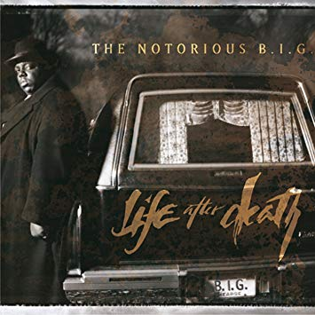
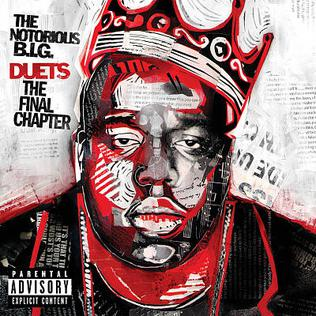

Albumy:
Studyjne

Ready to Die
Data wydania: 13 września, 1994
Wytwórnia: Bad Boy Records
Certyfikacje: 4x platyna

Life After Death
Data wydania: 25 marca, 1997
Wytwórnia: Bad Boy Records
Certyfikacje: diament, srebro, 2x platyna
Pośmiertne
Born Again
Data wydania: 7 grudnia, 1999
Wytwórnia: Bad Boy Records
Certyfikacje: 2x platyna

Duets: The Final Chapter
Data wydania: 20 grudnia, 2005
Wytwórnia: Bad Boy Records
Certyfikacje: platyna